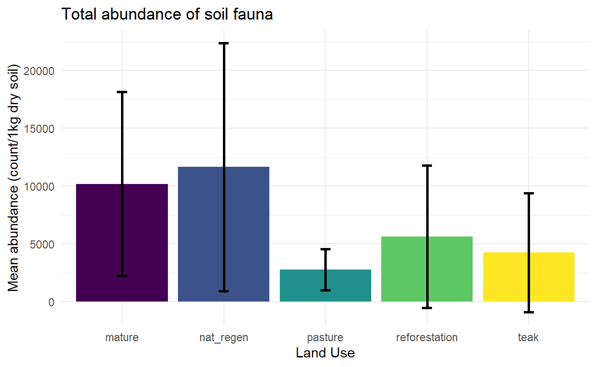
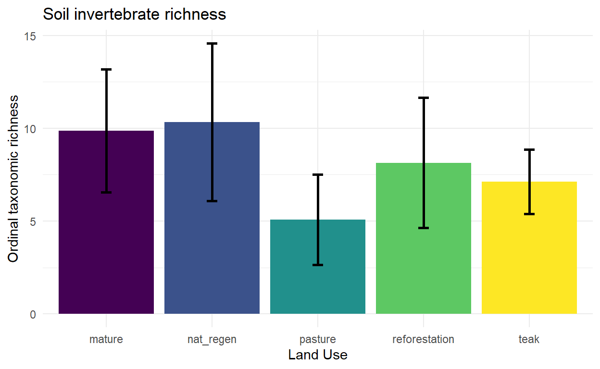
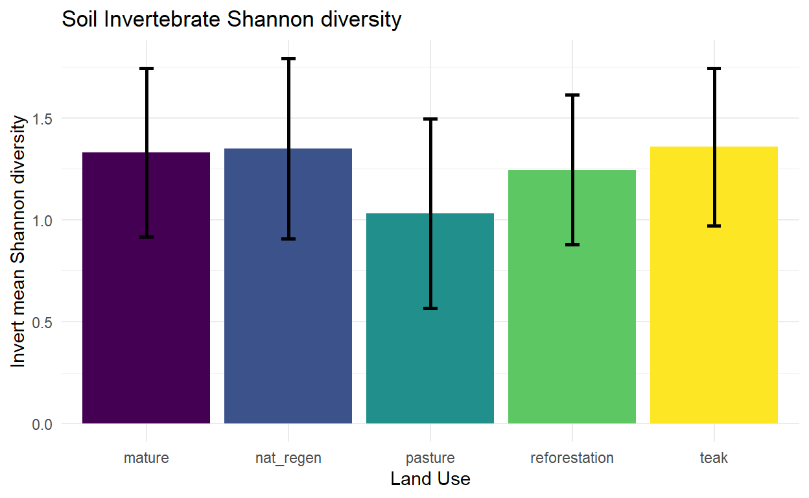
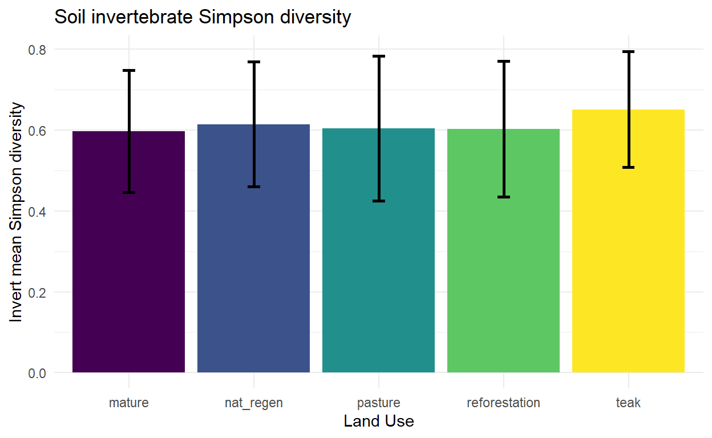

BASED ON OLD SYSTEM, NEED TO UPDATE
BASED ON OLD SYSTEM, NEED TO UPDATE
Killed all the R scripts with # so that I could still render the markdown in the meantime.
Soil invertebrates are incredibly diverse. To put things in perspective: Perching birds (this includes more than half of all bird species worldwide) are in the single order Passeriformes. A single soil sample from a mature forest can contain more than twenty different orders of animals! Most soil organisms in the tropics are undescribed species - if you look at a sample under the microscope you are likely to be the first human to ever lay eyes on at least a few species. These tiny creature also play a critical role in the carbon cycle, contributing to decomposition of plant material and cycling nutrients in the soil.
Important for the context of holistic biodiversity monitoring, soil fauna are very location-specific. A mammal observation at a particular point does not necessarily give too much information about the quality of habitat at that point for the mammal - the mammal could just be passing through between places that it actually eats, sleeps and mates. On the other hand, soil fauna have vastly smaller home ranges, and in all likelihood spend their entire lives within a few meters of the sampling point. So, in a patchy landscape with a lot of disturbance they are better indicators of conditions at a particular sampling point.
Brief summary of what I will be doing with my soil invert data:
Clean up and prepare for vegan R package
Calculate invertebrate richness at each sampling point, as well as abundance of all taxa across points and land use types
Calculate Shannon, Simpson and other diversity indices for each land use type
Run some ordinations to look at community composition differences between land use types.
Visualize abundance for all orders in relation to land use to see which are most sensitive.
If I have enough temperature data from this first round of sampling see if temperature mediates invertebrate response to land use (I suspect it does). The moisture data is unfortunately pretty low resolution, but that probably also plays a very important role.
Data cleanup
Three CSV files are needed for the initial data cleanup and analysis:
I will start with some clean up and organization. This involves making sure that R reads my dates as dates, converting my data to long format, splitting the dataset in two (one with unknowns and one without), correcting abundance data for sample mass, and splitting the data into absolute and relative abundance. I use absolute abundance data for calculating diversity indices and relative abundance for community structure modelling. Along the way I’ll calculate richness, evenness, total abundance, and several diversity indices using the ‘vegan’ R package. I use absolute abundance to calculate these metrics.
A note: I suspect that soil moisture and temperature mediate the effect of land use on soil invertebrates. Mature forests with a full canopy are likely to have more stable temperatures, lower daytime temperatures, and higher soil moisture than young forests or pastureland. Furthermore,the taxa that I found to be most sensitive to temperature during my research on BCI were most sensitive to land use in Azuero during my pilot study. Unfortunately, I don’t have temperature data and only have poor quality moisture data for this sample dataset - got better data collection later on though, so could explore this relationship more with the full dataset.
Click here for code
#load packages
library(ggplot2)
library(tidyr)
library(dplyr)
library(gridExtra)
library('funrar')
library(lubridate)
library(viridis)
library(vegan)
#load data
#Load the datasets
metadata <- read.csv("media/data/ETH dry season deployments AZ001-053.csv")
data <- read.csv("media/data/ETH dry season soil inverts AZ001-053.csv")
soil_metadata <- read.csv("media/data/ETH dry season soil metadata AZ001-053.csv")
## Initial cleanup, organization
#make dates recognizable by R
soil_metadata$collect_date <- ymd(soil_metadata$collect_date)
#remove rows not in analysis
data <- data[c(1:53),]
soil_metadata <- soil_metadata[c(1:53),]
metadata <- metadata[c(1:53),]
#Add 0 abundance for unobserved taxa
data[is.na(data)] <- 0
#get rid of point names in data (that info will live in soil_metadata)
data <- data[,-c(1:2)]
#create dataset with unknowns (for total abundance)
data_unknown <- data
#create dataset without unknowns (for diversity and community composition)
data <- data[,-c(1)]
######################################################
#for some reason soil_metadata$dry_mass is character, not numeric, need to fix
soil_metadata$dry_mass <- as.numeric(soil_metadata$dry_mass)
#converting to count/1000g dry sample mass
data <- (1000/soil_metadata$dry_mass)*data
data_unknown <- (1000/soil_metadata$dry_mass)*data_unknown
#Do I need to convert mass-corrected absolute abundance to relative abundance? Maybe for NMDS
invert_richness <- specnumber(data) #Tallying number of taxa
invert_shannon<-diversity(data) #Shannon diversity index
invert_simpson<- diversity(data, "simpson") #Simpson diversity index
invert_J<-invert_shannon/log(invert_richness) #Pielou's evenness
invert_abundance<-rowSums(data_unknown) #total absolute abundance per 1000g (including unknowns)
data_summary<-data.frame(metadata,invert_richness, invert_shannon, invert_simpson, invert_J, invert_abundance)
invert_data <- data_summary[,c(1,7,22:26)] #simplifying the data frameHere’s what the summarized data looks like:
| point | land_use | invert_richness | invert_shannon | invert_simpson | invert_J | invert_abundance |
|---|---|---|---|---|---|---|
| AZ001 | mature | 11 | 1.4315050 | 0.7023600 | 0.5969839 | 18900.000 |
| AZ002 | mature | 10 | 1.4207144 | 0.6973917 | 0.6170084 | 23285.714 |
| AZ003 | nat_regen | 13 | 1.2553945 | 0.6161949 | 0.4894422 | 22357.143 |
| AZ004 | mature | 6 | 0.7079999 | 0.3502148 | 0.3951423 | 11277.778 |
| AZ005 | nat_regen | 12 | 1.3791747 | 0.6209508 | 0.5550207 | 18500.000 |
| AZ006 | reforestation | 12 | 1.4354789 | 0.6819997 | 0.5776792 | 22944.444 |
| AZ007 | reforestation | 14 | 1.0426692 | 0.4204255 | 0.3950915 | 13055.556 |
| AZ008 | nat_regen | 16 | 1.9866738 | 0.8223691 | 0.7165411 | 8850.000 |
| AZ009 | nat_regen | 11 | 1.2769575 | 0.6210384 | 0.5325326 | 33200.000 |
| AZ010 | pasture | 5 | 1.0125399 | 0.5641738 | 0.6291264 | 4733.333 |
Taxa is the number of unique taxa found in each sample (richness/alpha diversity), abundance is total (mass-corrected) abundance of soil fauna, J is Pielou’s evenness (how evenly distributed abundance is between the taxa; species dominance rather than diversity), and Shannon and Simpson are two different diversity indices, ways of conceptualizing diversity that combine abundance and richness. The Simpson index is more heavily influenced by dominant species, while the Shannon index is more heavily influenced by rare species. Going forward I will use Shannon to represent diversity, but if we want we can easily swap in Simpson or something else. Note: sample 53 is anomalous. Never have I seen a mature forest sample with so few inverts. Maybe the reason will become apparent after soil chemistry analysis, or there was an error of some kind during extraction/sample processing.
Next up, summarizing averages for each land use type:
| land_use | invert_mean_abundance | sd_abundance | invert_mean_richness | sd_richness | invert_mean_shannon | sd_shannon | invert_mean_simpson | sd_simpson |
|---|---|---|---|---|---|---|---|---|
| mature | 10191.561 | 7957.057 | 9.875000 | 3.313932 | 1.330993 | 0.4141217 | 0.5966999 | 0.1508682 |
| nat_regen | 11646.576 | 10720.322 | 10.333333 | 4.242641 | 1.349588 | 0.4422892 | 0.6146296 | 0.1547696 |
| pasture | 2790.008 | 1778.080 | 5.071429 | 2.432608 | 1.030131 | 0.4645757 | 0.6037063 | 0.1791235 |
| reforestation | 5626.618 | 6154.426 | 8.142857 | 3.505098 | 1.245135 | 0.3672368 | 0.6030049 | 0.1684005 |
| teak | 4251.367 | 5156.708 | 7.125000 | 1.726888 | 1.357589 | 0.3856606 | 0.6513495 | 0.1435022 |
Visualization
Abundance

Abundance data is corrected for mass to give values of density per 1000g dry soil. The soil moisture values for the sample data set are based on air-dried samples and mass was recorded with a kitchen scale (low resolution), so moisture is a potential source of error here. Moisture has a large influence on mass, and can vary considerably (30-50% in the wet season in my experience), so this is a considerable source of error.Most of the other soil data have moisture collected with a probe, which should be more accurate.

The low richness in teak is perhaps related to nutrient leaching and soil erosion (Fernández-Moya et al 2014, Amponsah & Meyer 2008, Boley et al 2009). Assessing biodiversity via richness has the caveat that rare species weigh pretty heavily on the metric. If a community has 100 individuals of one taxon but only one individual each for a further 9, then it will have a higher richness than a community composed of 8 taxa with 1 individuals each (a more diverse scenario).

Weird!! Not what I encountered in my pilot study. Wonder how this will look with the whole dataset.

Individual taxa abundance
Now going into the weeds a bit, let’s see how land use affects different taxa. During my pilot testing some groups stood out as especially sensitive to land use, lets see if that holds.
Click here for setup code
#```{r, echo=FALSE, message = FALSE, warning = FALSE} #some setup:
#Absolute abundance: #first splitting the data by land use type mature.data <- wide.data.unknown.absolute2[wide.data.unknown.absolute2\(land.use=="mature",] nat.regen.data <- wide.data.unknown.absolute2[wide.data.unknown.absolute2\)land.use==“nat.regen”,] reforestation.data <- wide.data.unknown.absolute2[wide.data.unknown.absolute2\(land.use=="reforestation",] teak.data <- wide.data.unknown.absolute2[wide.data.unknown.absolute2\)land.use==“teak”,] pasture.data <- wide.data.unknown.absolute2[wide.data.unknown.absolute2$land.use==“pasture”,]
#Then finding the mean abundance for each taxa, for each land use mean.abundance.mature <- summarize_all(mature.data, mean) mean.abundance.nat.regen <- summarize_all(nat.regen.data, mean) mean.abundance.reforestation <- summarize_all(reforestation.data, mean) mean.abundance.teak <- summarize_all(teak.data, mean) mean.abundance.pasture <- summarize_all(pasture.data, mean)
#Reincorporating the land use data mean.abundance.mature\(land.use <- "mature" mean.abundance.nat.regen\)land.use <- “nat.regen” mean.abundance.reforestation\(land.use <- "reforestation" mean.abundance.teak\)land.use <- “teak” mean.abundance.pasture$land.use <- “pasture”
#finally I make a dataframe with average abundance data for each land use type. mean.abundance.summary <- rbind(mean.abundance.mature, mean.abundance.nat.regen, mean.abundance.reforestation, mean.abundance.teak, mean.abundance.pasture) #cut out the columns that got lost along the way mean.abundance.summary <- mean.abundance.summary[-c(1,3:7,12)]
##repeat everything for relative abundance: #first splitting the data by land use type mature.dataR <- wide.data.unknown[wide.data.unknown\(land.use=="mature",] nat.regen.dataR <- wide.data.unknown[wide.data.unknown\)land.use==“nat.regen”,] reforestation.dataR <- wide.data.unknown[wide.data.unknown\(land.use=="reforestation",] teak.dataR <- wide.data.unknown[wide.data.unknown\)land.use==“teak”,] pasture.dataR <- wide.data.unknown[wide.data.unknown$land.use==“pasture”,]
#Then finding the mean abundance for each taxa, for each land use mean.abundance.matureR <- summarize_all(mature.dataR, mean) mean.abundance.nat.regenR <- summarize_all(nat.regen.dataR, mean) mean.abundance.reforestationR <- summarize_all(reforestation.dataR, mean) mean.abundance.teakR <- summarize_all(teak.dataR, mean) mean.abundance.pastureR <- summarize_all(pasture.dataR, mean)
#Reincorporating the land use data mean.abundance.matureR\(land.use <- "mature" mean.abundance.nat.regenR\)land.use <- “nat.regen” mean.abundance.reforestationR\(land.use <- "reforestation" mean.abundance.teakR\)land.use <- “teak” mean.abundance.pastureR$land.use <- “pasture”
#finally I make a dataframe with average abundance data for each land use type. mean.abundance.summaryR <- rbind(mean.abundance.matureR, mean.abundance.nat.regenR, mean.abundance.reforestationR, mean.abundance.teakR, mean.abundance.pastureR) #cut out the columns that got lost along the way mean.abundance.summaryR <- mean.abundance.summaryR[-c(1,3:7,12)]
</details>
### Formicidae [Hymenoptera]
#```{r, echo=FALSE, message = FALSE, warning = FALSE}
##### Hymenoptera absolute
hym.ab <- ggplot(data=mean.abundance.summary, aes(x=land.use, y=Formicidae, fill=land.use)) +
geom_bar(stat="identity", position=position_dodge(), width = 0.50, aes(x = factor(land.use, level = land.use)), show.legend = FALSE)+
#scale_fill_brewer(palette="Paired")+
labs(title="Formicidae absolute",
x="Land Use Type", y = "Abundance (count/1kg soil)")+
theme(text=element_text(family="Arial")) +
scale_fill_viridis(discrete=TRUE, option="viridis", begin = .3,end = .75,)+
theme_minimal()+ theme(plot.title = element_text(hjust = 0.5)) + theme(legend.position="none") + scale_x_discrete(guide = guide_axis(n.dodge = 2))
##### Formicidae relative
hym.rel <- ggplot(data=mean.abundance.summaryR, aes(x=land.use, y=Formicidae, fill=land.use)) +
geom_bar(stat="identity", position=position_dodge(), width = 0.50, aes(x = factor(land.use, level = land.use)), show.legend = FALSE)+
#scale_fill_brewer(palette="Paired")+
labs(title="Formicidae relative",
x="Land Use Type", y = "Relative abundance (count/1kg soil)")+
theme(text=element_text(family="Arial")) +
scale_fill_viridis(discrete=TRUE, option="viridis", begin = .3,end = .75,)+
theme_minimal()+ theme(plot.title = element_text(hjust = 0.5)) + scale_x_discrete(guide = guide_axis(n.dodge = 2))
grid.arrange(hym.ab, hym.rel, ncol=2, widths = c(1.65,2))Coleoptera
#```{r, echo=FALSE, message = FALSE, warning = FALSE} ##### Coleoptera absolute col.ab <- ggplot(data=mean.abundance.summary, aes(x=land.use, y=Coleoptera, fill=land.use)) + geom_bar(stat=“identity”, position=position_dodge(), width = 0.50, aes(x = factor(land.use, level = land.use)), show.legend = FALSE)+ #scale_fill_brewer(palette=“Paired”)+ labs(title=“Coleoptera absolute”, x=“Land Use Type”, y = “Abundance (count/1kg soil)”)+ theme(text=element_text(family=“Arial”)) + scale_fill_viridis(discrete=TRUE, option=“viridis”, begin = .3,end = .75,)+ theme_minimal()+ theme(plot.title = element_text(hjust = 0.5)) + theme(legend.position=“none”) + scale_x_discrete(guide = guide_axis(n.dodge = 2))
Coleoptera relative
col.rel <- ggplot(data=mean.abundance.summaryR, aes(x=land.use, y=Coleoptera, fill=land.use)) + geom_bar(stat=“identity”, position=position_dodge(), width = 0.50, aes(x = factor(land.use, level = land.use)), show.legend = FALSE)+ #scale_fill_brewer(palette=“Paired”)+ labs(title=“Coleoptera relative”, x=“Land Use Type”, y = “Relative abundance (count/1kg soil)”)+ theme(text=element_text(family=“Arial”)) + scale_fill_viridis(discrete=TRUE, option=“viridis”, begin = .3,end = .75,)+ theme_minimal()+ theme(plot.title = element_text(hjust = 0.5)) + scale_x_discrete(guide = guide_axis(n.dodge = 2))
grid.arrange(col.ab, col.rel, ncol=2, widths = c(1.65,2))
### Geococcus [Hemiptera]
#```{r, echo=FALSE, message = FALSE, warning = FALSE}
##### Geococcus absolute
hem.ab <- ggplot(data=mean.abundance.summary, aes(x=land.use, y=Geococcus, fill=land.use)) +
geom_bar(stat="identity", position=position_dodge(), width = 0.50, aes(x = factor(land.use, level = land.use)), show.legend = FALSE)+
#scale_fill_brewer(palette="Paired")+
labs(title="Geococcus absolute",
x="Land Use Type", y = "Abundance (count/1kg soil)")+
theme(text=element_text(family="Arial")) +
scale_fill_viridis(discrete=TRUE, option="viridis", begin = .3,end = .75,)+
theme_minimal()+ theme(plot.title = element_text(hjust = 0.5)) + theme(legend.position="none") + scale_x_discrete(guide = guide_axis(n.dodge = 2))
##### Geococcus relative
hem.rel <- ggplot(data=mean.abundance.summaryR, aes(x=land.use, y=Geococcus, fill=land.use)) +
geom_bar(stat="identity", position=position_dodge(), width = 0.50, aes(x = factor(land.use, level = land.use)), show.legend = FALSE)+
#scale_fill_brewer(palette="Paired")+
labs(title="Geococcus relative",
x="Land Use Type", y = "Relative abundance (count/1kg soil)")+
theme(text=element_text(family="Arial")) +
scale_fill_viridis(discrete=TRUE, option="viridis", begin = .3,end = .75,)+
theme_minimal()+ theme(plot.title = element_text(hjust = 0.5)) + scale_x_discrete(guide = guide_axis(n.dodge = 2))
grid.arrange(hem.ab, hem.rel, ncol=2, widths = c(1.65,2))Protura
#```{r, echo=FALSE, message = FALSE, warning = FALSE} ##### Protura absolute pro.ab <- ggplot(data=mean.abundance.summary, aes(x=land.use, y=Protura, fill=land.use)) + geom_bar(stat=“identity”, position=position_dodge(), width = 0.50, aes(x = factor(land.use, level = land.use)), show.legend = FALSE)+ #scale_fill_brewer(palette=“Paired”)+ labs(title=“Protura absolute”, x=“Land Use Type”, y = “Abundance (count/1kg soil)”)+ theme(text=element_text(family=“Arial”)) + scale_fill_viridis(discrete=TRUE, option=“viridis”, begin = .3,end = .75,)+ theme_minimal()+ theme(plot.title = element_text(hjust = 0.5)) + theme(legend.position=“none”) + scale_x_discrete(guide = guide_axis(n.dodge = 2))
Protura relative
pro.rel <- ggplot(data=mean.abundance.summaryR, aes(x=land.use, y=Protura, fill=land.use)) + geom_bar(stat=“identity”, position=position_dodge(), width = 0.50, aes(x = factor(land.use, level = land.use)), show.legend = FALSE)+ #scale_fill_brewer(palette=“Paired”)+ labs(title=“Protura relative”, x=“Land Use Type”, y = “Relative abundance (count/1kg soil)”)+ theme(text=element_text(family=“Arial”)) + scale_fill_viridis(discrete=TRUE, option=“viridis”, begin = .3,end = .75,)+ theme_minimal()+ theme(plot.title = element_text(hjust = 0.5)) + scale_x_discrete(guide = guide_axis(n.dodge = 2))
grid.arrange(pro.ab, pro.rel, ncol=2, widths = c(1.65,2))
### Collembola
#```{r, echo=FALSE, message = FALSE, warning = FALSE}
mean.abundance.summaryR$Collembola <- mean.abundance.summaryR$Entomobryomorpha + mean.abundance.summaryR$Poduromorpha + mean.abundance.summaryR$Symphypleona
mean.abundance.summary$Collembola <- mean.abundance.summary$Entomobryomorpha + mean.abundance.summary$Poduromorpha + mean.abundance.summary$Symphypleona
##### Collembola absolute
coll.ab <- ggplot(data=mean.abundance.summary, aes(x=land.use, y=Collembola, fill=land.use)) +
geom_bar(stat="identity", position=position_dodge(), width = 0.50, aes(x = factor(land.use, level = land.use)), show.legend = FALSE)+
#scale_fill_brewer(palette="Paired")+
labs(title="Collembola absolute",
x="Land Use Type", y = "Abundance (count/1kg soil)")+
theme(text=element_text(family="Arial")) +
scale_fill_viridis(discrete=TRUE, option="viridis", begin = .3,end = .75,)+
theme_minimal()+ theme(plot.title = element_text(hjust = 0.5)) + theme(legend.position="none") + scale_x_discrete(guide = guide_axis(n.dodge = 2))
##### Collembola relative
coll.rel <- ggplot(data=mean.abundance.summaryR, aes(x=land.use, y=Collembola, fill=land.use)) +
geom_bar(stat="identity", position=position_dodge(), width = 0.50, aes(x = factor(land.use, level = land.use)), show.legend = FALSE)+
#scale_fill_brewer(palette="Paired")+
labs(title="Collembola relative",
x="Land Use Type", y = "Relative abundance (count/1kg soil)")+
theme(text=element_text(family="Arial")) +
scale_fill_viridis(discrete=TRUE, option="viridis", begin = .3,end = .75,)+
theme_minimal()+ theme(plot.title = element_text(hjust = 0.5)) + scale_x_discrete(guide = guide_axis(n.dodge = 2))
grid.arrange(coll.ab, coll.rel, ncol=2, widths = c(1.65,2)) + scale_x_discrete(guide = guide_axis(n.dodge = 2))
Oribatida
#```{r, echo=FALSE, message = FALSE, warning = FALSE} ##### Oribatida absolute ori.ab <- ggplot(data=mean.abundance.summary, aes(x=land.use, y=Oribatida, fill=land.use)) + geom_bar(stat=“identity”, position=position_dodge(), width = 0.50, aes(x = factor(land.use, level = land.use)), show.legend = FALSE)+ #scale_fill_brewer(palette=“Paired”)+ labs(title=“Oribatida absolute”, x=“Land Use Type”, y = “Abundance (count/1kg soil)”)+ theme(text=element_text(family=“Arial”)) + scale_fill_viridis(discrete=TRUE, option=“viridis”, begin = .3,end = .75,)+ theme_minimal()+ theme(plot.title = element_text(hjust = 0.5)) + theme(legend.position=“none”) + scale_x_discrete(guide = guide_axis(n.dodge = 2))
Oribatida relative
ori.rel <- ggplot(data=mean.abundance.summaryR, aes(x=land.use, y=Oribatida, fill=land.use)) + geom_bar(stat=“identity”, position=position_dodge(), width = 0.50, aes(x = factor(land.use, level = land.use)), show.legend = FALSE)+ #scale_fill_brewer(palette=“Paired”)+ labs(title=“Oribatida relative”, x=“Land Use Type”, y = “Relative abundance (count/1kg soil)”)+ theme(text=element_text(family=“Arial”)) + scale_fill_viridis(discrete=TRUE, option=“viridis”, begin = .3,end = .75,)+ theme_minimal()+ theme(plot.title = element_text(hjust = 0.5)) + scale_x_discrete(guide = guide_axis(n.dodge = 2))
grid.arrange(ori.ab, ori.rel, ncol=2, widths = c(1.65,2))
### Other Acari
#```{r, echo=FALSE, message = FALSE, warning = FALSE}
##### other.acari absolute
aca.ab <- ggplot(data=mean.abundance.summary, aes(x=land.use, y=acari.other, fill=land.use)) +
geom_bar(stat="identity", position=position_dodge(), width = 0.50, aes(x = factor(land.use, level = land.use)), show.legend = FALSE)+
#scale_fill_brewer(palette="Paired")+
labs(title="Other Acari absolute",
x="Land Use Type", y = "Abundance (count/1kg soil)")+
theme(text=element_text(family="Arial")) +
scale_fill_viridis(discrete=TRUE, option="viridis", begin = .3,end = .75,)+
theme_minimal()+ theme(plot.title = element_text(hjust = 0.5)) + theme(legend.position="none") + scale_x_discrete(guide = guide_axis(n.dodge = 2))
##### other.acari relative
aca.rel <- ggplot(data=mean.abundance.summaryR, aes(x=land.use, y=acari.other, fill=land.use)) +
geom_bar(stat="identity", position=position_dodge(), width = 0.50, aes(x = factor(land.use, level = land.use)), show.legend = FALSE)+
#scale_fill_brewer(palette="Paired")+
labs(title="other.acari relative",
x="Land Use Type", y = "Relative abundance (count/1kg soil)")+
theme(text=element_text(family="Arial")) +
scale_fill_viridis(discrete=TRUE, option="viridis", begin = .3,end = .75,)+
theme_minimal()+ theme(plot.title = element_text(hjust = 0.5)) + scale_x_discrete(guide = guide_axis(n.dodge = 2))
grid.arrange(aca.ab, aca.rel, ncol=2, widths = c(1.65,2))Pseudoscorpiones
#```{r, echo=FALSE, message = FALSE, warning = FALSE} ##### Pseudoscorpiones absolute pse.ab <- ggplot(data=mean.abundance.summary, aes(x=land.use, y=Pseudoscorpiones, fill=land.use)) + geom_bar(stat=“identity”, position=position_dodge(), width = 0.50, aes(x = factor(land.use, level = land.use)), show.legend = FALSE)+ #scale_fill_brewer(palette=“Paired”)+ labs(title=“Pseudoscorpiones absolute”, x=“Land Use Type”, y = “Abundance (count/1kg soil)”)+ theme(text=element_text(family=“Arial”)) + scale_fill_viridis(discrete=TRUE, option=“viridis”, begin = .3,end = .75,)+ theme_minimal()+ theme(plot.title = element_text(hjust = 0.5)) + theme(legend.position=“none”) + scale_x_discrete(guide = guide_axis(n.dodge = 2))
Pseudoscorpiones relative
pse.rel <- ggplot(data=mean.abundance.summaryR, aes(x=land.use, y=Pseudoscorpiones, fill=land.use)) + geom_bar(stat=“identity”, position=position_dodge(), width = 0.50, aes(x = factor(land.use, level = land.use)), show.legend = FALSE)+ #scale_fill_brewer(palette=“Paired”)+ labs(title=“Pseudoscorpiones relative”, x=“Land Use Type”, y = “Relative abundance (count/1kg soil)”)+ theme(text=element_text(family=“Arial”)) + scale_fill_viridis(discrete=TRUE, option=“viridis”, begin = .3,end = .75,)+ theme_minimal()+ theme(plot.title = element_text(hjust = 0.5)) + scale_x_discrete(guide = guide_axis(n.dodge = 2))
grid.arrange(pse.ab, pse.rel, ncol=2, widths = c(1.65,2))
### Diplura
#```{r, echo=FALSE, message = FALSE, warning = FALSE}
##### Diplura absolute
dip.ab <- ggplot(data=mean.abundance.summary, aes(x=land.use, y=Diplura, fill=land.use)) +
geom_bar(stat="identity", position=position_dodge(), width = 0.50, aes(x = factor(land.use, level = land.use)), show.legend = FALSE)+
#scale_fill_brewer(palette="Paired")+
labs(title="Diplura absolute",
x="Land Use Type", y = "Abundance (count/1kg soil)")+
theme(text=element_text(family="Arial")) +
scale_fill_viridis(discrete=TRUE, option="viridis", begin = .3,end = .75,)+
theme_minimal()+ theme(plot.title = element_text(hjust = 0.5)) + theme(legend.position="none") + scale_x_discrete(guide = guide_axis(n.dodge = 2))
##### Diplura relative
dip.rel <- ggplot(data=mean.abundance.summaryR, aes(x=land.use, y=Diplura, fill=land.use)) +
geom_bar(stat="identity", position=position_dodge(), width = 0.50, aes(x = factor(land.use, level = land.use)), show.legend = FALSE)+
#scale_fill_brewer(palette="Paired")+
labs(title="Diplura relative",
x="Land Use Type", y = "Relative abundance (count/1kg soil)")+
theme(text=element_text(family="Arial")) +
scale_fill_viridis(discrete=TRUE, option="viridis", begin = .3,end = .75,)+
theme_minimal()+ theme(plot.title = element_text(hjust = 0.5)) + scale_x_discrete(guide = guide_axis(n.dodge = 2))
grid.arrange(dip.ab, dip.rel, ncol=2, widths = c(1.65,2))Symphyla
#```{r, echo=FALSE, message = FALSE, warning = FALSE} ##### Symphyla absolute sym.ab <- ggplot(data=mean.abundance.summary, aes(x=land.use, y=Symphyla, fill=land.use)) + geom_bar(stat=“identity”, position=position_dodge(), width = 0.50, aes(x = factor(land.use, level = land.use)), show.legend = FALSE)+ #scale_fill_brewer(palette=“Paired”)+ labs(title=“Symphyla absolute”, x=“Land Use Type”, y = “Abundance (count/1kg soil)”)+ theme(text=element_text(family=“Arial”)) + scale_fill_viridis(discrete=TRUE, option=“viridis”, begin = .3,end = .75,)+ theme_minimal()+ theme(plot.title = element_text(hjust = 0.5)) + theme(legend.position=“none”) + scale_x_discrete(guide = guide_axis(n.dodge = 2))
Symphyla relative
sym.rel <- ggplot(data=mean.abundance.summaryR, aes(x=land.use, y=Symphyla, fill=land.use)) + geom_bar(stat=“identity”, position=position_dodge(), width = 0.50, aes(x = factor(land.use, level = land.use)), show.legend = FALSE)+ #scale_fill_brewer(palette=“Paired”)+ labs(title=“Symphyla relative”, x=“Land Use Type”, y = “Relative abundance (count/1kg soil)”)+ theme(text=element_text(family=“Arial”)) + scale_fill_viridis(discrete=TRUE, option=“viridis”, begin = .3,end = .75,)+ theme_minimal()+ theme(plot.title = element_text(hjust = 0.5)) + scale_x_discrete(guide = guide_axis(n.dodge = 2))
grid.arrange(sym.ab, sym.rel, ncol=2, widths = c(1.65,2))
```{.r .distill-force-highlighting-css}